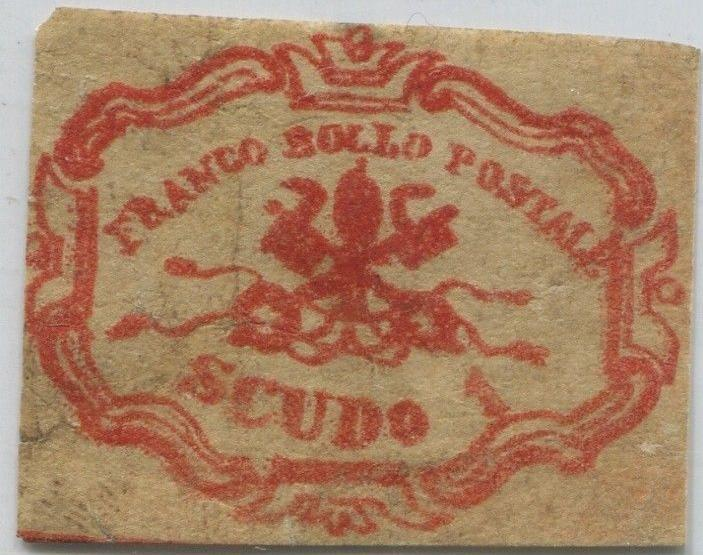
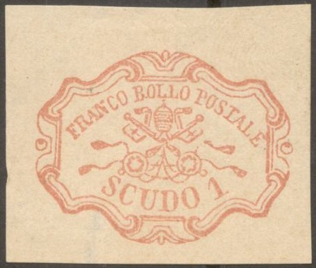
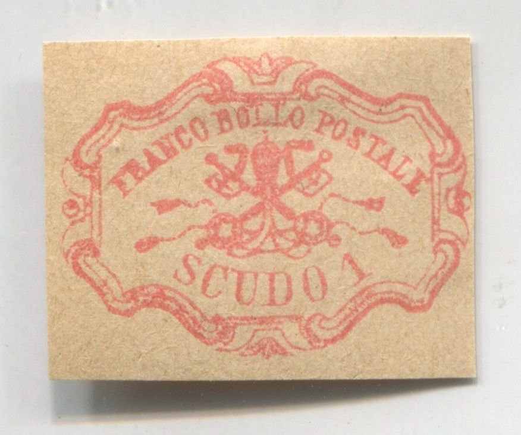
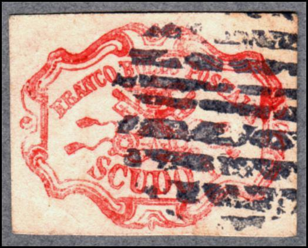
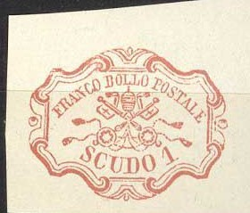
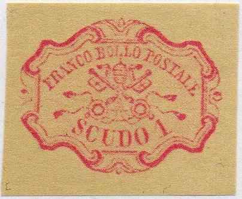

A genuine 1 Sc stamp.
Stato Pontificio, Kirchenstaat, Etats pontificaux
Return To Catalogue - Papal States, 1851 issue, 50 b and 1 Sc values - Forgeries of the 50 b value - Other values of the 1851 issue - 1867 issue - Italy
Note: on my website many of the
pictures can not be seen! They are of course present in the
catalogue;
contact me if you want to purchase the catalogue.
For other values of the 1851 issue ,click here.
A genuine 1 Sc stamp.
Many forgeries exist of the 50 b and 1 S stamps. In the early 20 th century Album Weeds already distinghuishes 6 forgeries of the 50 b and 5 forgeries of the 1 B.
Forgery described in 'The Spud Papers' and first forgery of the 1 S of Album Weeds (Spiro forgery):
In the above forgery the cross goes into the first "L" of "BOLLO", moreover, this cross leans over to the right. The "F" of "FRANCO" has no bottom foot. The "E" of "POSTALE" is very large at the top and the letters "POS" of this same word are very near to the border above them. The "D" of "SCUDO" has a strange bottom part (as if it was pushed upwards). The "S" of "SCUDO" is too close to the design above it and the "1" is too narrow. Also note that there are red 'crosses' in the corners of the stamp (as dividing marks). There are more differences. This forgery is lithographed. 'The Spud Papers' says that this forgery was printed in sheets of 36 (4x9). I think this is also the first forgery described in 'Album Weeds'. Album Weeds says that it is usually uncancelled, but exists with the grid cancel (see image above). It is generally assumed that the forger Spiro made this forgery. Note the 'enchanced' stamp with cancel "ROMA 9 DEC 59".
Although Spiro forgeries are usually found in sheetlets of 25 stamps (5x5), these forgeries appear in larger sheets of 36 stamps:


This is the fourth stamp of the seventh row of the above sheet,
it has a scratch through the right hand side pearl.

Very crudely executed forgery with most of the central design
blurred.

Senf forgery with overprint "FALSCH.":
The above forgeries are probably Behrman forgeries made in 1864. These forgeries are rather deceptive. The tiara is small and narrow, the left pearl has different shading. These forgeries are also described in the book 'Roman States Forgeries, the issue of 1852' by F.L. Levitsky.
Fournier made two cliches of these forgeries. The first cliche looks like:
Page from a 'Fournier Album of Philatelic Forgeries' showing a
block of four forgeries of the 1 Sc value together with some
other forgeries of the Papal States.
Another block of Fournier forgeries with tete-beche stamps and
doubly printed stamps.

Fournier forgery, taken from a 'Fournier Album of Philatelic
Forgeries' on the backside 'FAC-SIMILE' is printed.
Fournier forgery of the 1 Sc value with cancel "ROMA 17 AUG.
66" (image obtained thanks to Richard Smallwood)

Another Fournier forgery with cancel "ROMA 17 AUG 66".
This particular forgery appears to be engraved. It has no serifs
on top of the "T" of "POSTALE". The top part
of the "C" of "SCUDO" is too short. The
"E" of "POSTALE" touches the frameline to the
right of it.
In the above Fournier forgeries of the 1 Sc value, the "E" of "POSTALE" touches the frameline. Also the right key has an opening (missing line) at the top.
(Forged Fournier cancels of Italy, taken from a Fournier Album;
reduced sizes)

The cancel "ROMA 17 AUG. 66" can be found in 'The Fournier Album of Philatelic Forgeries' as shown above. In the book 'Roman States Forgeries' by F.J.Levitsky and F.A.Jenkins the cancels "ROMA 1 DEC 68", "CIVITAVECCHIA 10 NOV 67" and "VITERBO 6 DEC 67" were actually attributed to the forger Venturini.
The second cliche of Fournier is also rather deceptive:


A forgery with a "FORLI 6 MAC" cancel as can be found
on Fournier fogeries of Romagne?

Left image obtained thanks to Richard Smallwood. "D"
and "O" of "SCUDO" quite far apart.
"LL"of "BOLLO" touches frame above it.


The lettering is different in the above forgery, see for example the "S" of "SCUDO" or the slanting first "L" of "BOLLO".


In this forgery, made by Zechmeyer, there is a white diagonal line going through the "F" of "FRANCO" and the "LO" of "BOLLO" (also through the left ornaments). The second stamp has this line even continued through the upper design. The "F" of "FRANCO" has no upper serifs. There are other minor differences when compared to a genuine stamp. The cancel is a bogus one consisting of parallel lines.
In these forgeries, the "B" of "BOLLO" is slanting too much to the left. The stamp appears to be engraved.

Most likely the same forgery, but printed in more vivid colors.


I've noticed that there is always a break in the inner frameline
below the "C" of "SCUDO" in the above Sperati
forgeries. The left bottom part of the "A" of
"FRANCO" is curved instead of straight as in the
genuine stamps. One of the above stamps has a forged "ROMA
26 NOV. 64" cancel as well as a grill cancel.


Sperati forged cancels "ROMA 10 GIU 64" and "ROMA
26 NOV 64".

A different kind of Sperati forgery
The Sperati forgeries are lithographed instead of engraved and thus there is no 'impression' of the lines in the paper in his forgeries. Nevertheless, the details are very good, since a photograph of a genuine stamp was used to make his reproductions.


Poor old forgery, Letters and design all very poor. There is a
dot on the "E" of "POSTALE". The words
"BOLLO" and "POSTALE" are joined, etc. I've
seen this forgery with a cancel consisting of an ellipse with
lines. These forgeries have guidelines.

Forgery with perforation and too thin outer frameline.


A modern forgery, reduced size
Note the white spots on the thick outer upper left frameline.
Some presumably other modern forgeries which are often offered together with the above forgery are shown below. The paper is very yellow and the ink is pinkish and appears not to be very sharp; this is so since the image consists of microscopic dots when viewed under a magnifying glass. Usually it is offered in uncancelled condition, but it also exists with cancel (probably a bogus cancel) as shown here:

Other modern forgery
The forger Peter Winter also made forgeries of the 1 Sc value somewhere in the 1980's. I've seen it with a curved 'Annullato' cancel. Another Winter forgery:
Peter Winter forgery on letter with cancels "GENEVE" in
green and "ROTONDA 12 LUG. 1860". The stamp, the
cancels and the letter are forged. I've seen the same letter with
a forged Bremen stamp (with different cancels).
Vatican souvenir sheet of 1985 with a reproduction of a 1 Sc
stamp
Zoom-in of this reproduction.

Other forgery.
Stamps, that I don't not quite trust:

Click here for Papal States, 1867 issue and Vatican issues.
Stamps - Francobolli - Timbres-Poste - Briefmarken


{kind=link}
{kind=link}
{kind=link}
{kind=link}
{kind=link}
{kind=link}
{kind=link}
{kind=link}